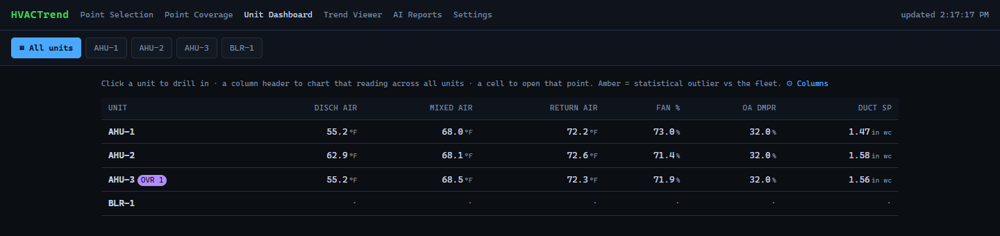
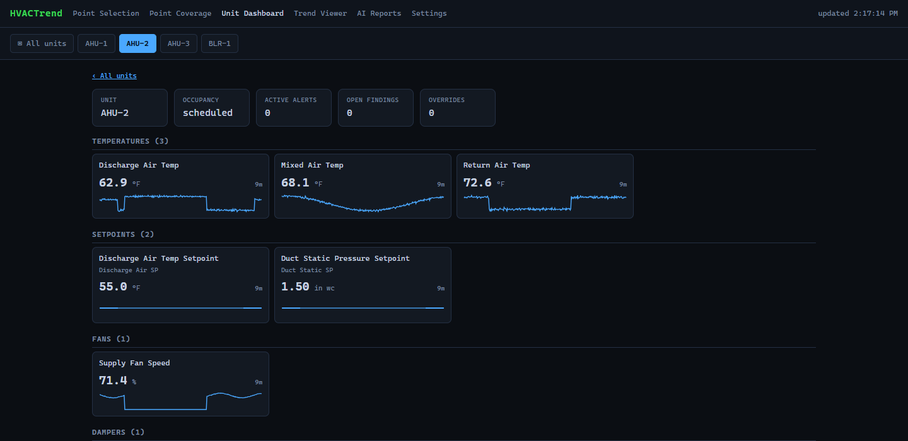

What it does
Trend logging
Polls the points you pick with ReadPropertyMultiple, falling back to single reads where a controller needs it. Every reading carries its quality, and 5-minute and hourly averages let a year of data chart instantly.
A viewer made for HVAC work
Zoom, pan, jump to a day, compare with the day or week before. Plot a reading against its setpoint, or against the other units. X-Y scatter, weather overlay, occupied-hours shading, notes, saved views, CSV. Works on a phone.
Realtime trends
Read chosen points every 5 seconds while you stroke a valve or watch a discharge temperature settle, with caps on how many run at once to protect the controllers.
Alarms on your phone
A separate watchdog checks every 5 minutes: data that stops, a controller that stops answering, equipment alarms that open, get worse or clear. A morning check-in, and a daily reminder of what's still wrong, through ntfy.
Overrides, seen
It reads (never writes) each commandable point's priority array, so you see when someone at the workstation is holding a setpoint by hand, and since when.
And the rest
A dashboard of every air handler and plant system, point coverage for the alarm rules, a one-button rescan after a programming change, verified weekly backups, and an optional AI summary of what the rules found, with your own API key.
Screens


From the demo: a made-up building with a week of readings.
Safe by design
Read-only BACnet
- It only sends reads and discovery. Writes are refused in code, whatever the configuration says.
- Disruptive services (reinitialize, communication control, file writes, create or delete object) are blocked outright.
- None of this can be switched on from the web pages.
Local by default
- Out of the box only the computer it runs on can open the pages.
- Others you let in get the trend viewer and Realtime, and nothing else: no settings, no secrets, no backups.
- API keys and the notification topic live in a separate file that is never committed or backed up.
Try it in a minute, without a BACnet network
git clone https://github.com/jamesccupps/HVACTrend.git cd HVACTrend python -m venv .venv .venv/bin/pip install -e . # Windows: .venv\Scripts\pip install -e . .venv/bin/python scripts/demo.py # Windows: .venv\Scripts\python scripts\demo.py
Then open http://localhost:8001: a made-up building with a week of readings, one unit that runs warm in the afternoons, and an operator override. Nothing is sent anywhere.
Install it for your building
Windows (the tested platform)
Install Python 3.11+ and download the release. Double-click install.bat: it makes a private Python environment and runs a setup wizard (building name, which network card is on BACnet, who may open the pages). Then find your controllers, map units to controllers, choose points on the Point Selection page, and install the service so it runs from boot.
What you need
| A computer | On the building's BACnet/IP network; a small always-on PC is ideal |
|---|---|
| Python | 3.11 or newer |
| Controllers | Reachable over BACnet/IP; MS/TP behind a BACnet router is fine |
| Disk | About 35 MB a day per 1,000 points at the 2-minute interval |
In production in one building since July 2026, with more than 450 automated tests and no hardware needed to run them. Other buildings name points differently: if yours aren't recognized, open an issue with a few examples.